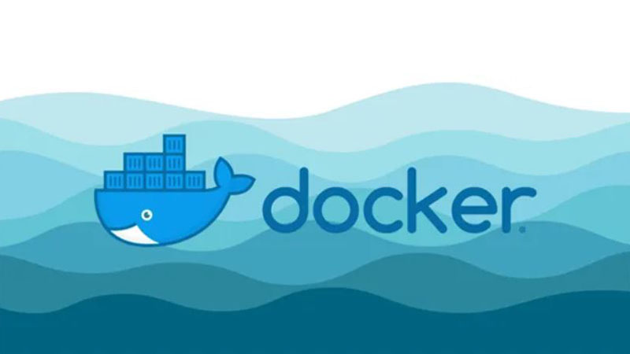

超低成本私有NAS
常用DOCKER容器安装
花最少的钱，整最嗨的活！

容器清单：
- SSH控制台：必备神器，可以通过网页操作主机控制台，这样就不用下载SHH软件了
- 文件管理器：主机上的文件，可以通过文件管理器进行管理，复制、粘贴、下载...
- Heidmall导航页：NAS上的网址收藏夹,再也不怕忘记容器的网址了
- jellyfin：打造家庭媒体中心，电脑、手机打开就能看电影
- 迅雷下载神器不用多说
- 百度网盘网盘文件挂机下载
- Transmission和qBittorentbt下载器
- Zerotier内网穿透神器，出门在外，也可访问家庭NAS
- 还有什么想起来再增加...
SSH控制台：
直接在NAS主机的控制台界面输入以下命令等待安装完成即可。docker run -d --net=host --log-driver json-file --log-opt max-file=1 --log-opt max-size=100m --restart always --name webssh -e TZ=Asia/Shanghai -e savePass=true jrohy/webssh--name 后边的webssh是容器名称，可以自己修改
本容器默认端口号为5032
使用方式为直接访问主机地址+端口号，例如192.168.X.X:5032 输入NAS主机IP地址，SSH端口号（默认是22），控制台用户名，密码连接即可。后续安装docker容器，可以把命令直接复制到本网页中执行。 至此，以后可以通过网页操控主机了，主机上的显示器可以拔掉了。 当然，你不装这个容器也可以，下载一个ssh管理软件，比如FinalShell也可以管理控制台，只是需要安装软件，而且换一个设备还得再安装，比较麻烦。
文件管理器：
在NAS主机的SSH控制台界面输入以下命令等待安装完成即可。docker run -d --name filebrowser -v /:/srv -v /opt/filebrowser/filebrowserconfig.json:/etc/config.json -v /opt/filebrowser/database.db:/etc/database.db -p 2038:80 filebrowser/filebrowser-v /:/srv是指文件管理器中的根目录设定为系统盘的根目录（前边的那个/代表系统盘根目录）
使用方式为直接访问主机地址+端口号，例如192.168.X.X:2038
默认用户名/密码：admin/admin
登录后：settings->设置中文&修改密码
Heidmall网页导航
NAS中安装的容器（app）太多，端口号不好记，因此可以通过一个网址导航来省去记端口的烦恼。docker pull linuxserver/heimdall--name 后边的webssh是容器名称，可以自己修改
docker run -d --name=heimdall -p 8080:80 -p 8081:443 -v /opt/Heimdall/config:/config --restart unless-stopped linuxserver/heimdall
本容器默认端口号为5032
使用方式为直接访问主机地址+端口号，例如192.168.X.X:5032 输入NAS主机IP地址，SSH端口号（默认是22），控制台用户名，密码连接即可。后续安装docker容器，可以把命令直接复制到本网页中执行。 至此，以后可以通过网页操控主机了，主机上的显示器可以拔掉了。 当然，你不装这个容器也可以，下载一个ssh管理软件，比如FinalShell也可以管理控制台，只是需要安装软件，而且换一个设备还得再安装，比较麻烦。
jellyfin家庭影院
NAS中安装的容器（app）太多，端口号不好记，因此可以通过一个网址导航来省去记端口的烦恼。docker pull linuxserver/jellyfin之后在主机中用命令ls /dev/dri查看是否支持硬件加速（显示出目录即为支持）。 进入DOCKER管理界面，点击修改，再找到Runtime & Resources，在Devices中添加设备: host和container都填写:/dev/dri在重新部署插件即可。
docker run -d \
--name=jellyfin \
-e PUID=1000 \
-e PGID=1000 \
-e TZ=Asia/Shanghai \
-p 8096:8096 \
-p 8920:8920 \
-v /opt/Jellyfin/config:/config \
-v /media/usbHDD500G/movies/:/data \
--restart unless-stopped \
linuxserver/jellyfin
++推荐用这个：
docker run -d \
--name=jellyfin \
-e PUID=1000 \
-e PGID=1000 \
-e TZ=Asia/Shanghai \
-p 8096:8096 \
-p 8920:8920 `#optional` \
-p 7359:7359/udp `#optional` \
-p 1900:1900/udp `#optional` \
-v /opt/jellyfin/config:/config \
-v /srv/dev-disk-by-uuid-4293efca-7eac-4085-847b-fd5ffe8c91d7:/data/movies \
-v /srv/dev-disk-by-uuid-4293efca-7eac-4085-847b-fd5ffe8c91d7:/data/tvshows `#optional` \
\
--restart unless-stopped \
lscr.io/linuxserver/jellyfin:latest
添加媒体库时，路径选择是用DOCKER内的路径，例如data/movies，不是实际路径。
进入http://192.168.31.56:8096设置
远程迅雷
迅雷下载网页版，和PC版用起来差不多，每日支持添加3个下载连接，如果超过3个，可以使用迅雷手机app的远程下载功能添加下载。docker run -d --name=xunlei --hostname=mynas --net=host -e XL_WEB_PORT=2345 -v /opt/xunlei/data:/xunlei/data -v /srv/dev-disk-by-uuid-00804d07-4136-4041-9a73-ddef75dcf9a4/downloads/xunlei:/xunlei/downloads --restart=unless-stopped --privileged cnk3x/xunlei:latest使用方式为直接访问主机地址+端口号，例如192.168.X.X:2345
如需邀请码，输入：迅雷牛通
*有时候可能出现下载存储位置异常，也就是说下载的内容没保存到挂载的文件夹内，而是存在了dock容器内部。此问题的解决方式详见下文“docker查看容器内部资源的方法”
百度网盘
百度网盘资源的远程下载，可以登录会员，且能长期保持登录状态。docker pull johnshine/baidunetdisk-crossover-vnc:latest使用方式为直接访问主机地址+端口号，例如192.168.X.X:6080
docker run -d -p 6080:6080 --name=BaiduNetDisk -v /srv/dev-disk-by-uuid-00804d07-4136-4041-9a73-ddef75dcf9a4/downloads:/home/baidu/baidunetdiskdownload/ johnshine/baidunetdisk-crossover-vnc:latest
*有时候可能出现下载存储位置异常，也就是说下载的内容没保存到挂载的文件夹内，而是存在了dock容器内部。此问题的解决方式详见下文“docker查看容器内部资源的方法”
BT下载之Transmission
被迅雷屏蔽的资源可以用这个下载。界面非常简单（简陋）。docker pull linuxserver/transmission注意修改-v /opt/transmission/downloads:/downloads 、-v /opt/transmission/downloads:/downloads/complete 、-v /opt/transmission/downloads:/watch/ 的主机路径，建议改为移动硬盘上的地址，不要直接下到系统盘内。
docker create --name=transmission -e PUID=0 -e PGID=0 -e TRANSMISSION_WEB_HOME=/combustion-release \
-e TZ=Asia/Shanghai -p 9091:9091 -p 51413:51413 -p 51413:51413/udp \
-v /opt/transmission/config:/config \
-v /opt/transmission/downloads:/downloads \
-v /opt/transmission/downloads:/downloads/complete \
-v /opt/transmission/downloads:/watch/ \
--restart unless-stopped linuxserver/transmission
移动硬盘的位置是/srv中对应的某个文件夹
使用方式为直接访问主机地址+端口号，例如192.168.X.X:9091
*有时候可能出现下载存储位置异常，也就是说下载的内容没保存到挂载的文件夹内，而是存在了dock容器内部。此问题的解决方式详见下文“docker查看容器内部资源的方法”
BT下载之qBittorent(未实际测试)
未实际使用过，仅供测试。docker run -d \默认监听端口是6881，即使想要映射监听端口，也不要监听默认端口，大多数PT站都是禁了的，用6881端口进行PT下载就会遇到以下问题：“Port 6881 is blacklisted！”，端口被黑名单了。
--name=qbittorrent \
-e PUID=1000 \
-e PGID=1000 \
-e TZ=Asia/Shanghai \
-e WEBUI_PORT=8080 \
-p 6881:6881 \
-p 6881:6881/udp \
-p 10004:8080 \
-v /share/CACHEDEV1_DATA/Container/Docker/Qbit/config:/config \
-v /share/CACHEDEV1_DATA/Download:/downloads \
--restart unless-stopped \
ghcr.io/linuxserver/qbittorrent
Zerotier内网穿透
原文网址：https://blog.csdn.net/qq_41813208/article/details/1255683131、建立网络
先在https://www.zerotier.com/ 建立一个NETWORK，获得Network ID
2、NAS端安装插件：
docker run -d \需要把上边最后一句中的233ccaac272dfa91修改为自己申请的Network ID
--name ZeroTier \
--restart=always \
--device=/dev/net/tun \
--net=host \
--cap-add=NET_ADMIN \
--cap-add=SYS_ADMIN \
zerotier/zerotier-synology:latest
docker exec -it ZeroTier zerotier-cli join 233ccaac272dfa91
3、在https://www.zerotier.com/ 中对应的NETWORK设置中对新加入的设备进行勾选授权。
4、手机/电脑下载app，用NETWOEK ID进行连接。重复步骤4.再次授权
docker查看容器内部资源的方法：
用docker ps命令查看容器ID然后用
docker exec -it 容器ID bash
进入容器，随后可以用linux命令查看文件
可用：
ls 查看当前目录文件
cd 文件夹名 进入文件夹
rm -rf 文件/文件夹名 强制删除（可用*代替文件名，能强制删除目录下全部文件/文件夹）
exit 退出docker容器
docker cp 容器名:/容器内目录或文件路径 /要复制的目标容器外路径
挂载设备：
sudo fdisk -l 查看驱动器列表，可获得驱动器名称sudo mount /dev/sdb1 /media/usbHDD500G 前边是驱动器名称，后边是要挂载到的文件夹路径
OMV web界面进不去解决方案
cat /var/log/syslog 查看系统日志确定错误原因如果是PHP无法启动，则：
sudo mkdir /var/run/php
sudo apt install --reinstall php-fpm
linux瘦身
删除软件包dpkg --list | grep "^rc" | cut -d " " -f 3 | xargs sudo dpkg --purge
删除没用的deb安装包
sudo apt-get clean
sudo apt-get autoclean
删除孤儿软件包
deborphan | xargs sudo apt-get purge -y
删除过时的软件包
sudo aptitude purge ~o
清理日志文件
sudo ncdu /var/log
删除大容量软件包
用dpigs –H找出大的软件包，然后用sudo apt-get remove pac1 pac2 pac3… 删除大容量软件包。